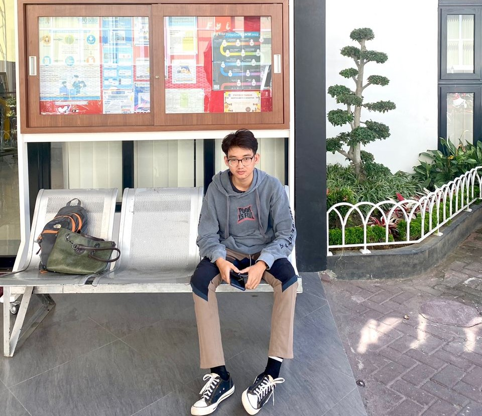
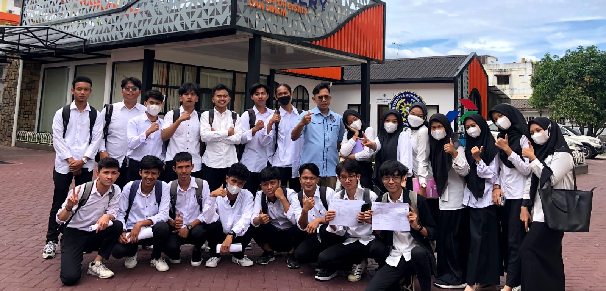
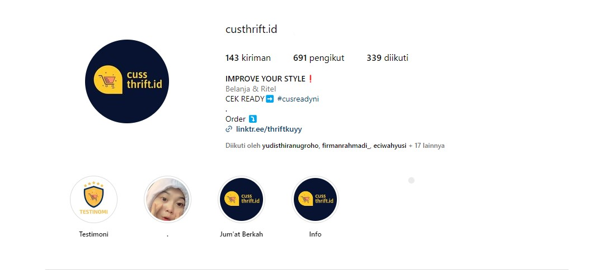
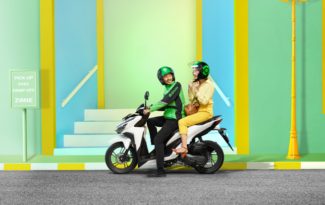

Profil

Sebagai seorang mahasiswa Sistem Informasi dengan minat besar di dunia teknologi, saya telah aktif dan berdedikasi dalam setiap aspek perkuliahan saya. Keberhasilan meraih IPK 4.00 mencerminkan komitmen saya terhadap pembelajaran dan pencapaian akademis yang tinggi.
Saya juga memiliki kecenderungan untuk bersinar baik dalam pekerjaan tim maupun ketika bekerja secara individu. Fleksibilitas saya dalam berkolaborasi dan kemampuan berpikir kritis yang saya miliki memungkinkan saya untuk menangani berbagai tantangan dengan efektif.
Selain itu, saya merasa nyaman dalam menghadapi lingkungan yang baru dan cepat beradaptasi dengan situasi yang berubah. Ini memungkinkan saya untuk mengejar kesempatan baru dan meraih hasil yang baik dalam berbagai konteks.
Singkatnya, sebagai mahasiswa Sistem Informasi, saya telah membuktikan diri sebagai seseorang yang berkomitmen, fleksibel, dan memiliki kemampuan berpikir kritis yang kuat dalam mengejar prestasi akademis dan profesional.
pendidikan

Saya sekarang lagi mengembangkan ilmu di Universitas Muhammadiyah Sumatera Utara,saya sekarang masi semester 5 saya adalah mahasiswa angkatan ke 3 dari jurusan saya yaitu Sistem Informasi.
Sebelum saya masuk ke Universitas Muhammadiyah Sumatera Utara saya bersekolah di SMK Cerdas Murni saya adalah salah satu lulusan covid.
Pengalaman
Berikut adalah beberapa pengalaman saya mungkin bisa jadi untuk mempertimbangkan saya.
Owner Toko Online

Nama toko online saya adalah Custrift.id ini adalah toko menjual pakaian bekas biasanya juga disebut monja, saya menjual jaket, celana, kaos, dan tas saya mencari barang bekas yg masi bagus dan masi layak pakai dan saya tentu saja mencuci/melaundry nya lagi lalu kami menjualnya, keahlian saya adalah mengembangkan dan memanajemen toko saya, membuat strategi pemasaran dan promosi, dan menganalisis keberhasilan dan pencapaian.
Ojek Online

Saya sembari kuliah saya mencari masukan yaitu menjadi ojek online di aplikasi gojek disini saya setiap harinya bertemu orang yg sebelumnya saya tidak kenal dan keahlian saya dalam menjalani pekerjaan ini adalah menjadi org yang ramah dan langsung berinteraksi dengan orang baru disetiap harinya lalu harus tepat waktu menjemput dan mengantar pelanggan saya. Setiap harinya saya mengera berapa pengeluaran saya untuk bensin, saldo, dan makan saya dan saya hitung berapa keuntungan saya setiap harinya lalu untuk kedepannya saya memiliki keinginan untuk lebih dan lebih lagi untuk mendapatkan uang yang lebih banyak.